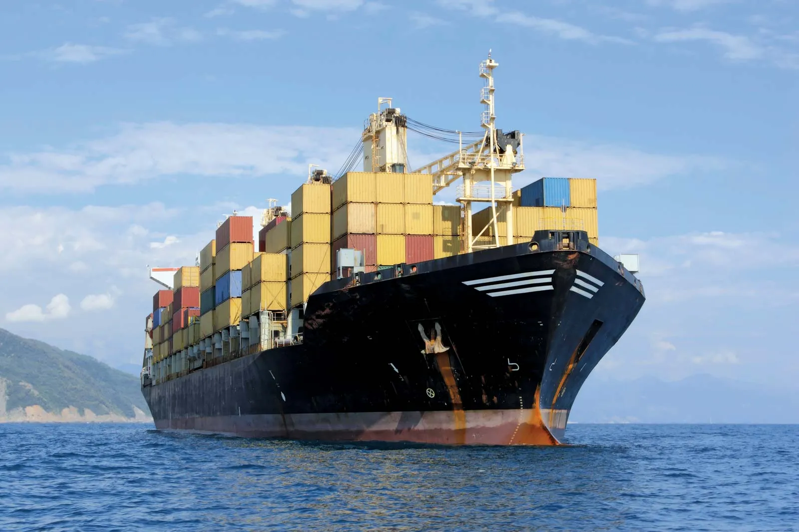
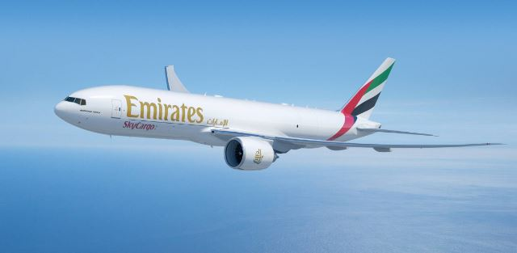

Water Transport
Water transportation is the international movement of water over large distances. Methods of transportation fall into three categories: Aqueducts, which include pipelines, canals, tunnels and bridges.
Land Tranpsort
Land transport is the transport or movement of people, animals or goods from one location to another location on land. The two main forms of land transport can be considered to be rail transport and road transport.
Air Transport
Air transport is one of the fastest modes of public transport which connects international boundaries.Air transport allows people from different countries to cross international boundaries and travel other countries for personal, business, medical, and tourism purposes.
